Follow every item through sampling and pre-production approvals in the Dev Tracker, before mass production begins.
These are the steps for one sample, from start to finish. Each line links to how to do it. This order is still a draft: see the yellow Draft note at the top.
When a Sample Request (SR) or Benchmark Sample (BS) file goes to a factory, record it and put its number in SR / BS # on the main rows.
The reports list the rows waiting on most of these steps.
Screenshots use made-up sample data. Click any picture to see it larger.
Click Open Dev Tracker at the top of this page, then Sign in with Microsoft. Use your Metro1 Microsoft account. If the page says Not added yet, ask Saul or another admin.
The button takes you straight there. Next time, it's under Development 1 in the side menu.
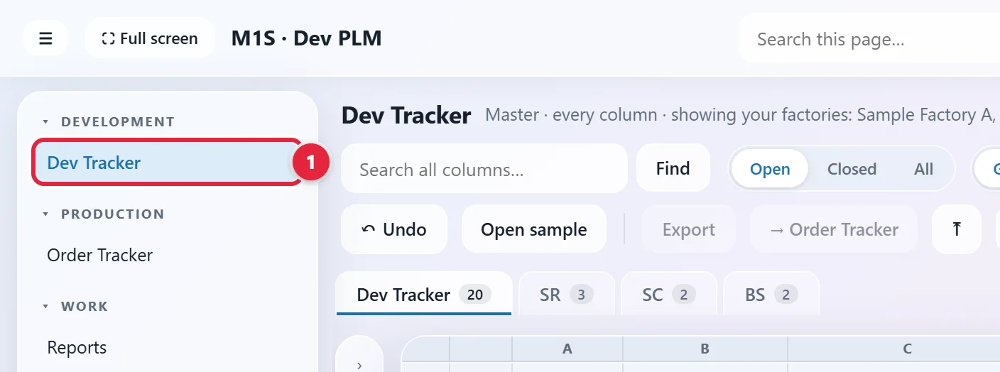
The tabs 1 sit above the grid (the table of rows). Dev Tracker is the main tab, with one row per style and sample. SR (Sample Request), SC (PPS Comments) and BS (Benchmark Sample) hold the files sent to factories.
The number on a tab counts all of that tab's rows you have access to, closed rows too. It doesn't change when you search or filter. The bar under the grid says how many are showing.
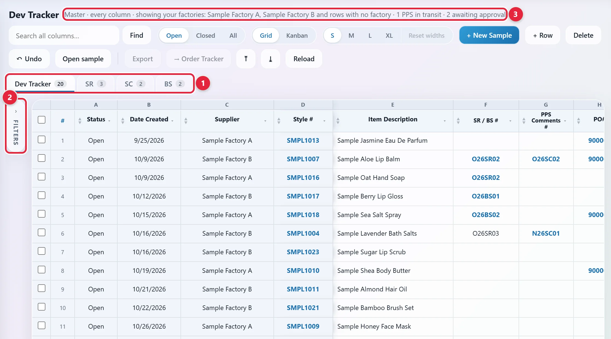
In the picture above, Filters 2 is on the left of the grid. The toolbar is the buttons above the tabs.
The top line 3 says whose rows you see. It also counts, among the main tab's Open rows, PPS (pre-production samples) in transit and samples awaiting approval. In transit means a Tracking # but no Date PPS Received. Awaiting approval means Pending M1S or Waiting for Buyer.
The grid opens at the bottom, on the newest rows. In the toolbar, click ⤒ to jump to the top and ⤓ to jump to the bottom.
Use Search all columns… 1 in the toolbar (the buttons above the tabs). Only matching rows stay. Clear the box to see every row again. Search this page… at the very top narrows the rows too.
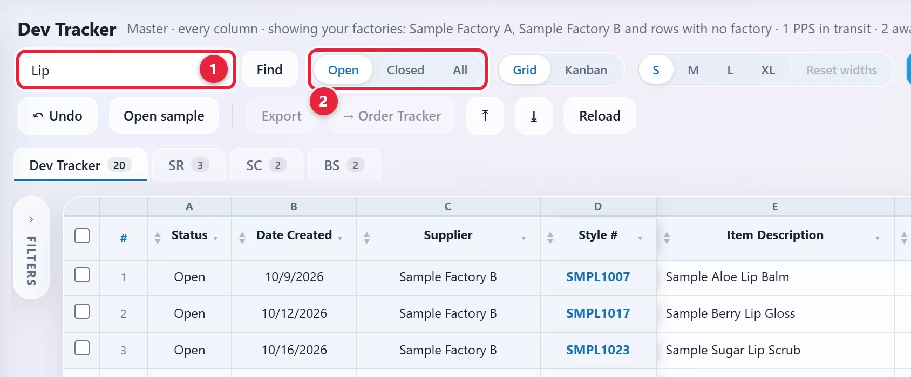
These buttons 2 are beside the search. The main tab starts on Open, so closed rows stay hidden until you pick Closed or All.
Click Filters on the left of the grid. A pane opens. On a very wide screen it's already open.
In the pane 1 click a heading, such as PP Sample Status. Then tick the values 2 you want. The rows change as you tick.
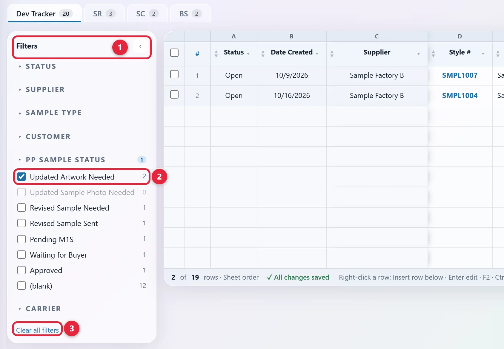
When you're done, click Clear all filters 3 at the bottom of the pane.
Click ▲▼ 1 beside a column name to sort. The first click sorts up and the next sorts down. On the main tab, the third click goes back to the sheet's own order, and so does clicking #. On SR, SC and BS the third click sorts up again. Click ▲▼ beside Date to go back to their usual order.
Click ▾ 2 to filter that column. Tick values, then click Done.
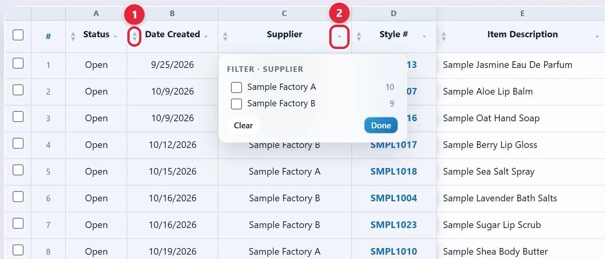
Click Find, beside the search box, or press Ctrl+F. Type in the Find box 1 and the selected cell jumps to the first match. Every match is marked. No rows hide. Press Enter for the next match and Shift+Enter for the one before. Esc closes Find.
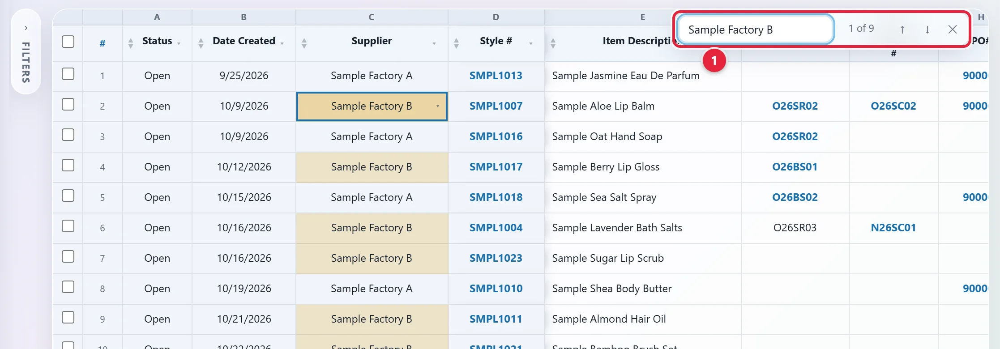
A panel opens with the style's rows and its Order Tracker items. The items show only if you can view the Order Tracker. The grid behind shows only that style's rows. Close the panel with ✕ and every row comes back.
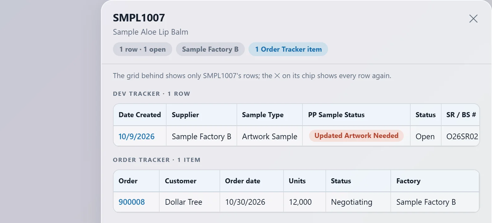
You need Edit for this. If you see Read only, go to If you see Read only. In a blue cell, click beside the blue text. A click on the text follows the link. The columns run far to the right, so scroll sideways. The first columns stay frozen.
Typing replaces what's in the cell. To change part of it, double-click the cell or press F2 first. To pick from a list, click ▾ in the cell 1 or start typing to narrow the list. Then click a value.
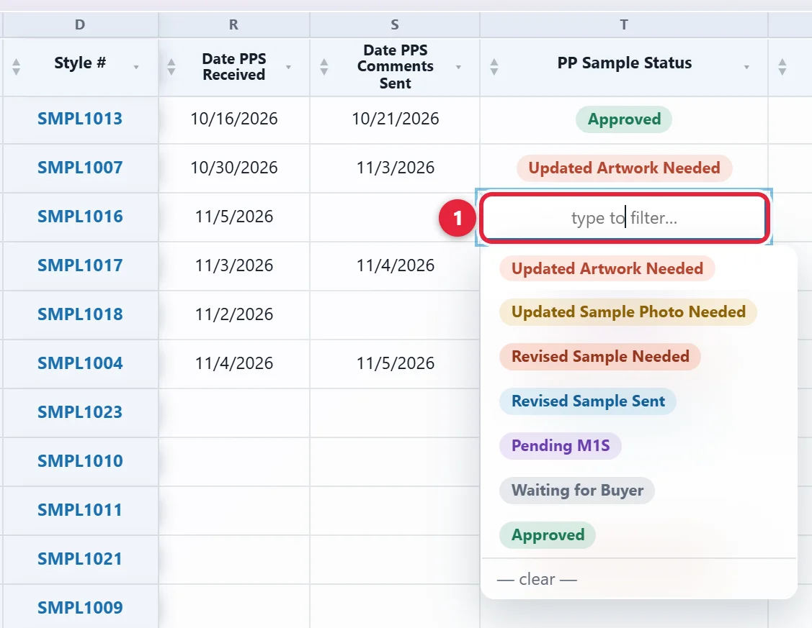
There's no Save button. A pick saves at once. Text saves a moment after you stop typing. Numbers and dates save when you press Enter or Tab, or leave the cell.
The cell 1 shows the new value. A message at the bottom says what changed, and its Undo 2 takes it back. The bar under the grid says ✓ All changes saved.
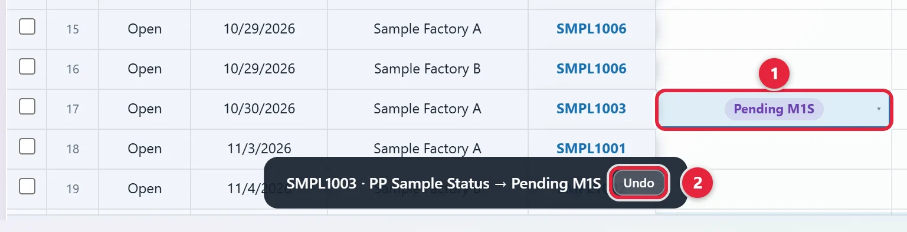
Esc cancels what hasn't saved yet. After that, use Undo.
Drag across them, or hold Shift and press the arrow keys. Click a number under # for a whole row, or a column letter for a whole column.
Ctrl+D on one cell copies the cell above it. On a selection, it copies the top row down.
Paste and fill are all or nothing. If one value doesn't fit, nothing changes and a box lists the cells. Fix them and try again.
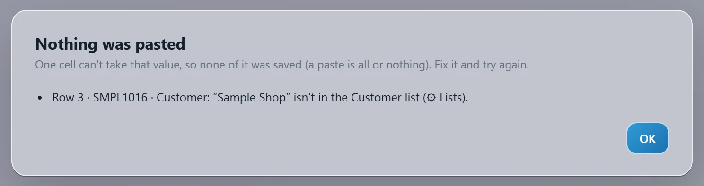
Open sample shows one sample: its fields, PPS comments, Note and Changes. A PPS is a pre-production sample.
Any cell 1 works, but not a blue link. A link goes somewhere else.
Open sample 2 is in the toolbar. A panel opens on the right. On the Kanban, click a card instead.
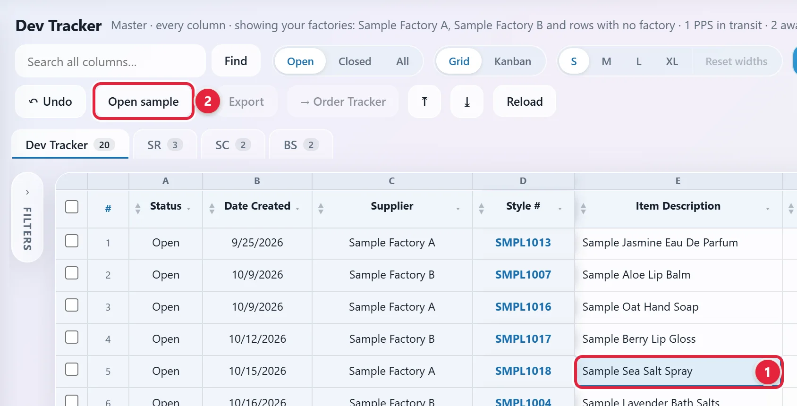
Both are in the panel. Pick Carrier 1 and type Tracking # 2 there, or fill them in the grid. The panel then shows In transit at the top, and the grid's top line counts it, until the sample has a received date.
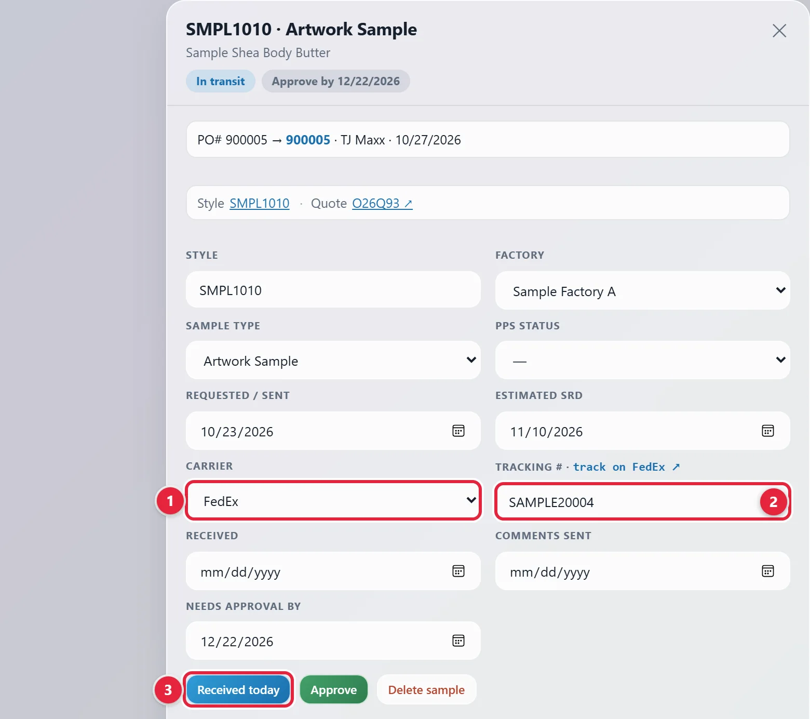
In the picture above, Received today 3 fills Date PPS Received with today's date, and nothing else. The button shows only while that date is blank. In the panel that date is called Received.
Type in PPS comments 3 and it saves by itself. PPS comments stay here. They don't reach the factory by themselves. Use Note 4 for anything internal. Neither is in the grid or the Export. A Note also shows on its Kanban card.
The hint beside the box mentions a PPS Comments column. Type your comments here. The grid's PPS Comments # holds only the SC file's number.
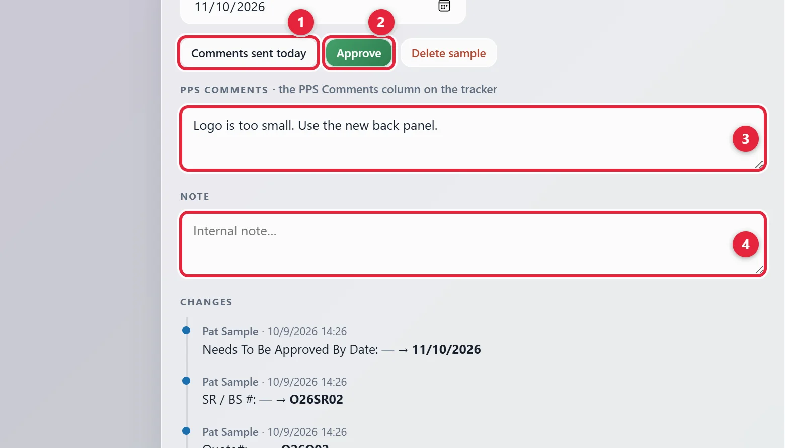
The SC file is the PPS comments sheet. Click Open Quote Tracker at the top of this page. Tick the style's row 1, then click PPS Sheet 2 in the top bar. An Excel file downloads. Type your comments in its blank Sample Comments column. For more, see Make files from ticked rows.
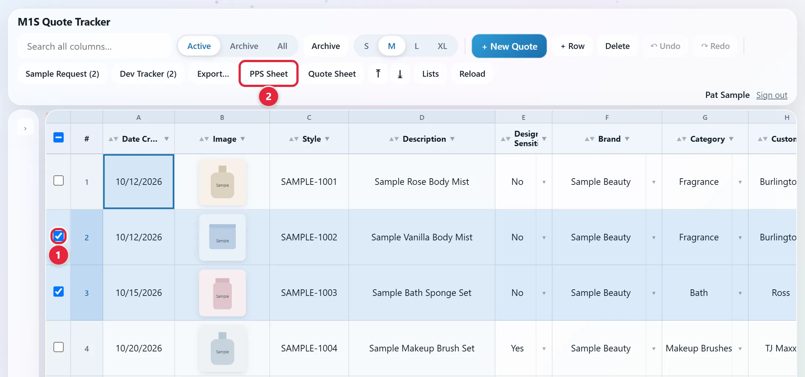
The Quote Tracker only downloads the file. It doesn't send it. Saul to confirm how it gets to the factory: see the yellow Draft note at the top.
Back in the panel, Comments sent today is marked 1 in the picture at step 5. It fills Date PPS Comments Sent with today's date. It only records the date. It sends nothing. The button shows once the sample has a received date, while this date is blank.
Pick PPS status in the panel, or PP Sample Status in the grid. In the picture at step 5, Approve 2 sets it to Approved. The row stays Open. To close it, go to Close or reopen a row. To see where each status puts the row in the reports, go to PP Sample Status: where each one shows.
Changes at the bottom lists who changed what and when. Close the panel with ✕ or Esc.
First record the file in Add an SR, SC or BS file to get its number. Then enter that number in the row's PPS Comments # cell.
It's the blue button in the toolbar. Stay on the Dev Tracker tab. A popup opens.
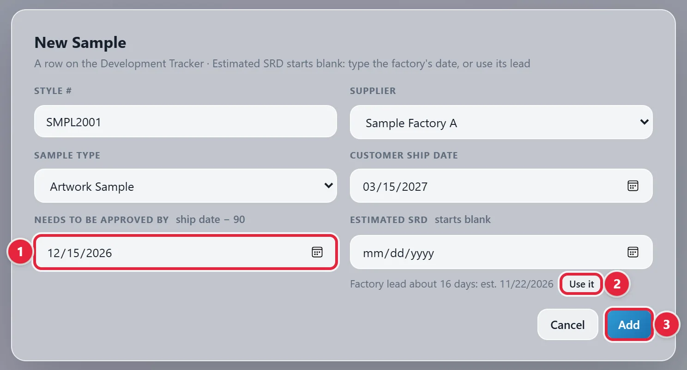
Style # suggests styles you already have, and you can type a new one. Supplier lists only your factories. If you have just one, it's already filled in. Sample Type starts on Artwork Sample, so check it. The type decides which reports list the row: see Sample Type: which reports list each one.
Needs To Be Approved By 1 fills itself in: the ship date minus 90 days. Type over it only if you have another date.
SRD is the Sample Ready Date. It starts blank. Type the factory's date. For an Artwork Sample, you can click Use it 2 instead. That fills in today plus the factory's usual lead time. It's only an estimate until someone types the factory's date. See Needs To Be Approved By Date and Estimated SRD in Reference.
Add 3 stays grey until the popup has a Style # and a Supplier, and while a date is only half typed. The new row goes to the bottom of the grid, with its Style # cell selected. If a search or filter hides it, the message says so.
The popup doesn't ask for Item Description, Customer or the later columns. Click each cell and type or pick. PP Sample Status starts blank.
For one sample, + New Sample asks for the main fields in one popup. Type or paste here when you have many rows, or need a row in the middle.
+ Row, beside + New Sample, moves the selected cell to a new line at the bottom. A click alone makes no row.
Until the row has a Supplier, it says Not saved: pick a Supplier 1 and nothing is saved. Once you pick one, the row saves. If you have just one factory, it's filled in, and the row saves at the first value you type. Esc clears a row that isn't saved yet.
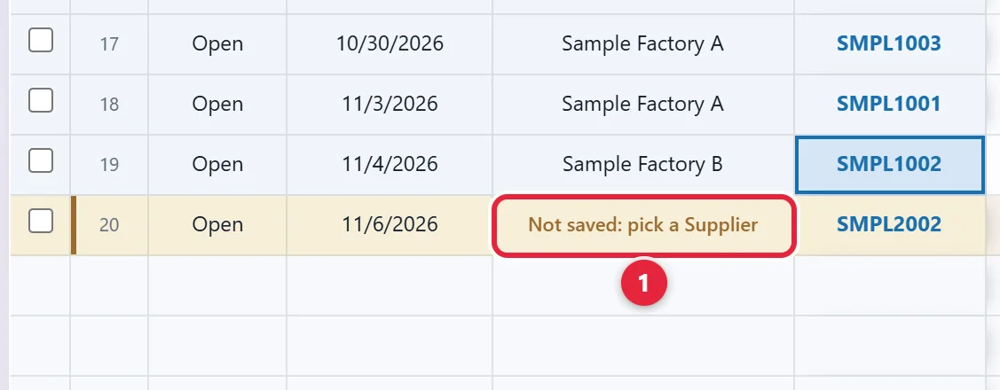
In the menu, pick Insert row below 1 and a blank line opens right under that row. It saves there once it has a Supplier. This works on the main tab, in the sheet's own order. If a column is sorted, click # first.
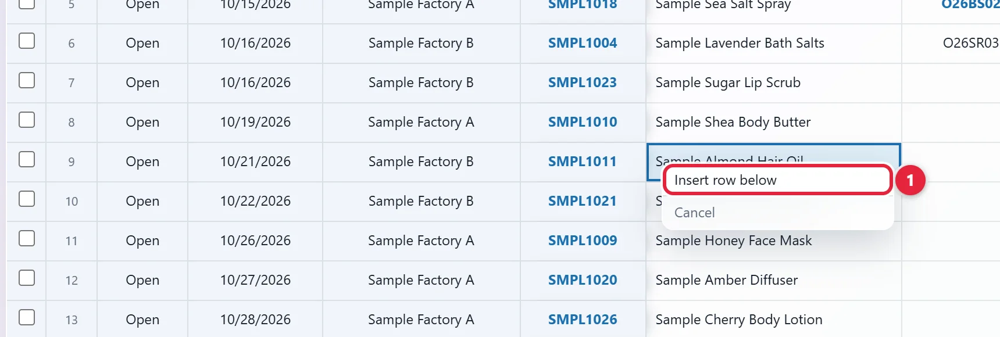
Click the blank cell in the column where your first copied column belongs, then press Ctrl+V. Your copied columns must be in the same order as the grid's. If your rows have every column, any cell on the line works.
Each pasted line with a Supplier becomes a row. A line with no Supplier isn't added, and the message says so. One bad value stops the whole paste. You can paste up to 500 rows at a time.
This records a file sent to a factory and gives it its number. It doesn't make or send the file. The Quote Tracker makes Sample Request and PPS comments files: see Make files from ticked rows. Saul to confirm where a BS file comes from.
SR 1 is for Sample Request files. SC is for PPS Comments files. BS is for Benchmark Sample files.
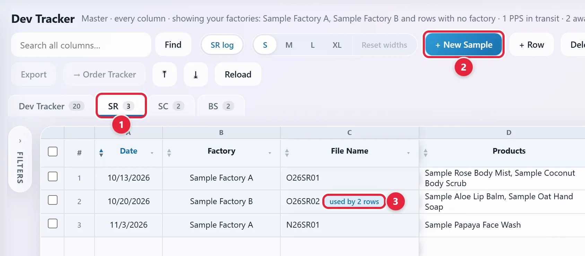
The button 2 has the same name on every tab. Here it opens New SR log entry.
Date starts on today. Pick the Factory. File Name 1 fills in with the next number for that month. You can type over it. Add the Products.
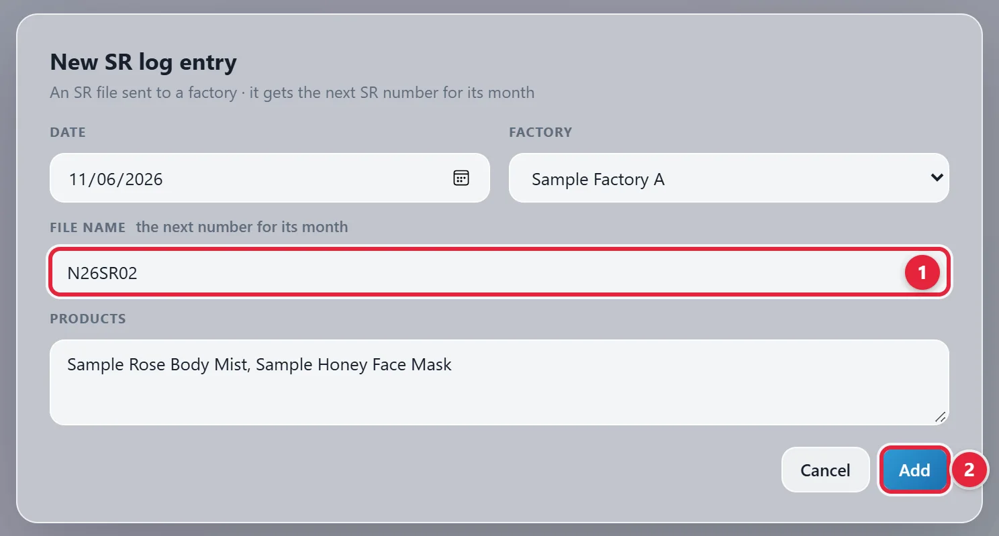
Add 2 stays grey until the popup has a Date and a Factory. The number is given when the row is added.
The popup doesn't ask for Customer, Carrier, Tracking #, Received or Tags. Fill in the ones that tab has in the grid.
On the Dev Tracker tab, enter it in SR / BS # (SR and BS files) or PPS Comments # (SC files). These cells take only numbers that already exist on those tabs.
Back on the file's tab, look at the picture at step 1. used by 2 rows 3 shows how many of your main rows use the number. Click it to list them.
Status is the first column. A list opens.
In the list, pick Closed 1 to close the row. Rows close only this way. Setting Approved doesn't close a row.
The row stays on screen, showing Closed. Click another row, then click Reload or change tab, and it leaves the Open view.
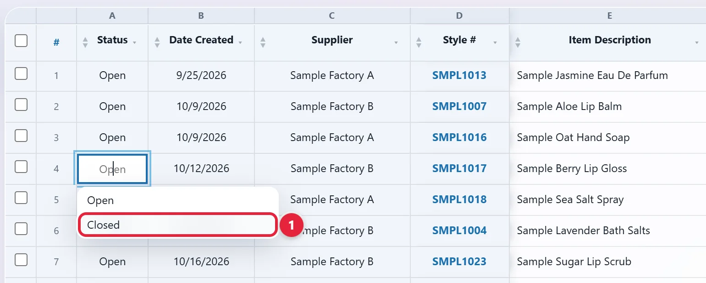
Click Closed or All at the top to see the row. Then set its Status to Open.
↶ Undo 1 is in the toolbar. You can also click Undo on the message at the bottom. It takes back your last change only. A paste, a fill or a clear counts as one change.
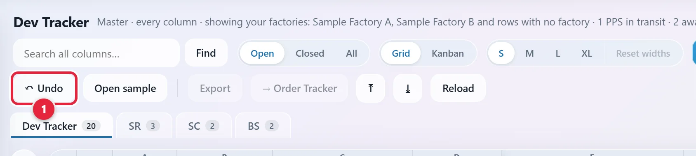
Undo asks first. Click OK to move the row to Recently deleted. An admin can restore it from there for 90 days.
Tick the box 1 at the left of the row. Or click a cell in the row. If any rows are ticked, Delete takes those.
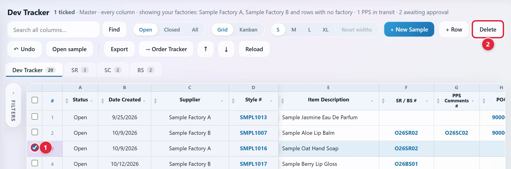
Delete 2 is in the toolbar. In Open sample, the same button is Delete sample.
It warns you that this can't be undone.
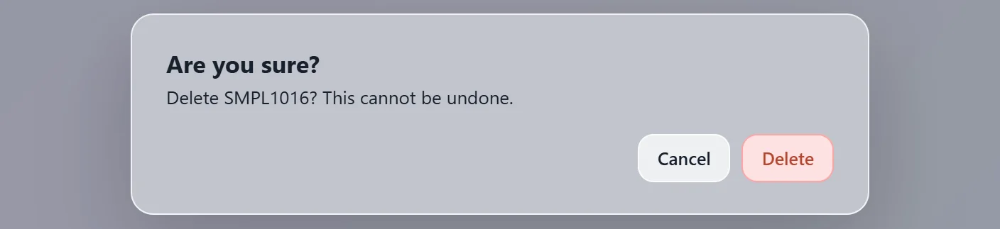
Recently deleted keeps deleted Dev Tracker rows, orders, items and Pending rows for 90 days. Only admins can open it. Not an admin? Ask Saul or another admin.
Open Recently deletedClick Open Recently deleted above. In the side menu it's under Work.
Pick Dev Tracker or Order Tracker in Filter 1.
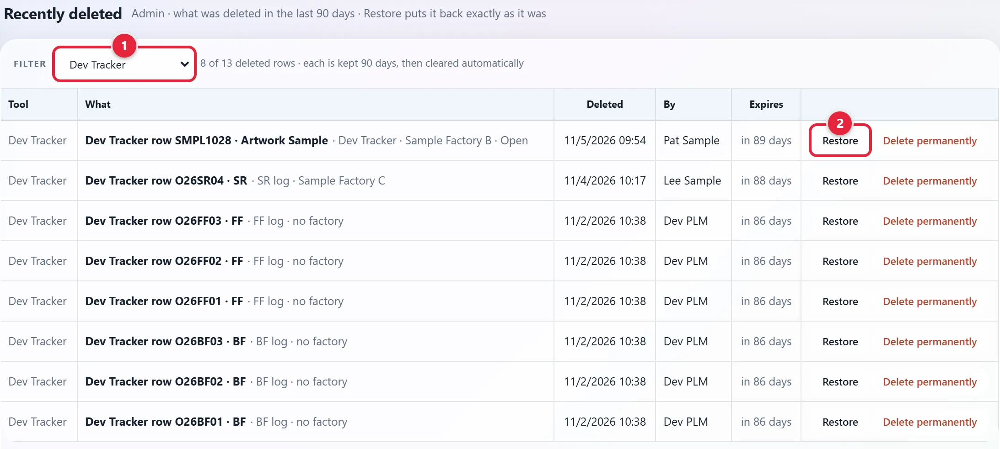
Click Restore 2. It puts the row back exactly as it was.
A message at the bottom says what happened. A restore can be refused, for example if its number is used again or its order is gone. The message then says why, and the row stays in the list.
In the toolbar, Kanban 1 shows the main tab as cards in columns. Each column is a PP Sample Status, with No status first. Scroll sideways for the others.
Open, Closed, All and the search still work. On the Kanban the search looks only at Style #, Item Description and Supplier. Find is grey here, because it works on the grid. Click Grid to go back.
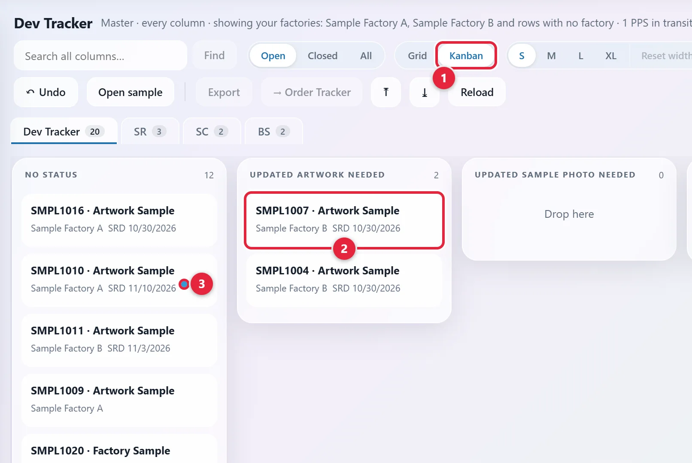
A card 2 opens the same panel as Open sample. A blue dot 3 means the sample is in transit. A card also shows its Note, if it has one.
People with Edit can drag a card to another column. That sets its PP Sample Status. Dropping on Approved leaves the row Open.
Tick each row's box 1 at the left. The box at the top of that column ticks every row shown. The top line counts them.
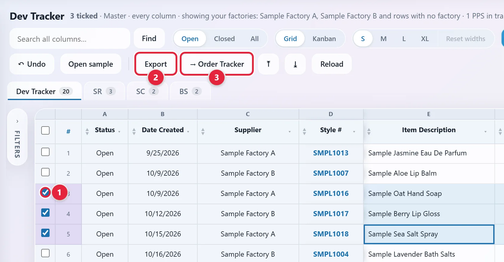
In the toolbar, Export 2 stays grey until a row is ticked. An Excel file downloads. The main tab's file has the order and columns shown on screen. An SR, SC or BS file has the workbook's layout. It works with Read only too.
This works from the main tab only, and needs Edit on the Order Tracker. A ticked row with no Style # stays behind.
→ Order Tracker 3 is beside Export. It stays grey until a row is ticked. A popup opens.
Each style gets one line 1 even if you ticked several of its rows. Type a whole number above 0.
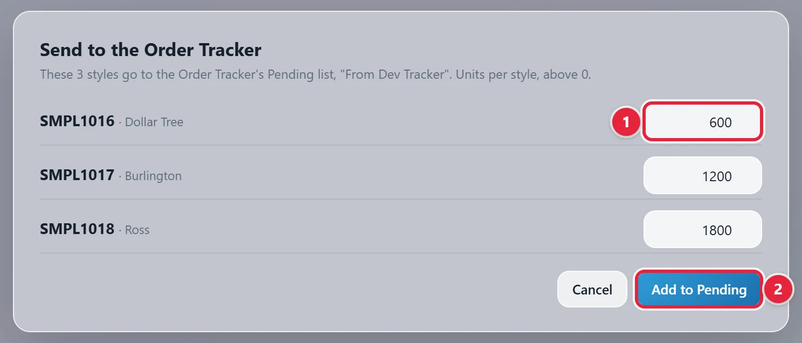
Add to Pending 2 sends the styles to the Order Tracker's Pending list, marked From Dev Tracker. Next, see Turn Pending items into an order form.
It's under Work. The cards say how many rows each report has now. The Read only tag on this page is normal. You can still run and download.
Run 1 opens the report in a panel. The Master Report holds four reports in one. The others are one report each.
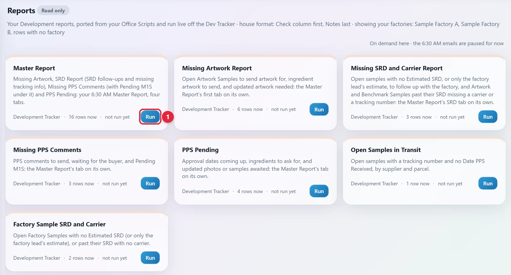
The tabs 2 of the Master Report are Missing Artwork Report, SRD Report, Missing PPS Comments and PPS Pending. You see only your factories' rows.
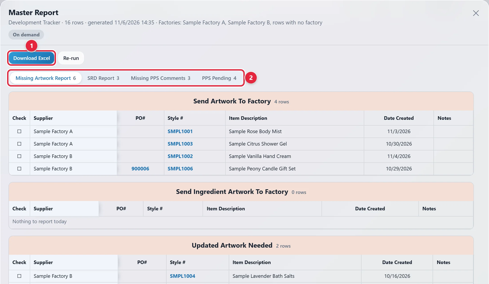
Download Excel 1 saves the whole report, in the same layout as the emailed reports. Re-run runs it again. Close the panel with ✕.
Beside the title 1 and under the grid 2 you see Read only. It means you can look but not change. You can still search, filter, use Find and click Open sample. Export works too, once you tick a row. It's grey until then, as it is for everyone. The buttons that change things stay grey.
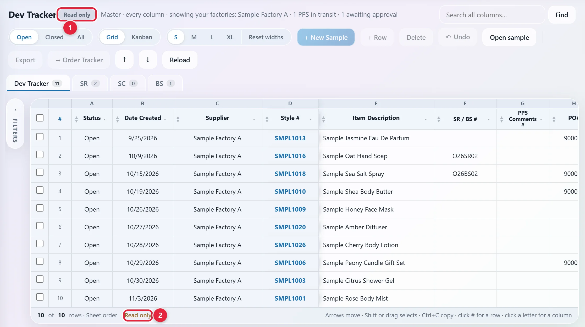
Ask one of the people Saul has given Edit. If you need Edit yourself, ask Saul or another admin. If a factory is missing, see Add a factory or change its email.
Need a new customer, carrier or status, and you aren't an admin? Ask Saul or another admin.
It's in the toolbar, for admins only. Pick a list at the top of the popup: Sample Type, PP Sample Status, Carrier or Customer.
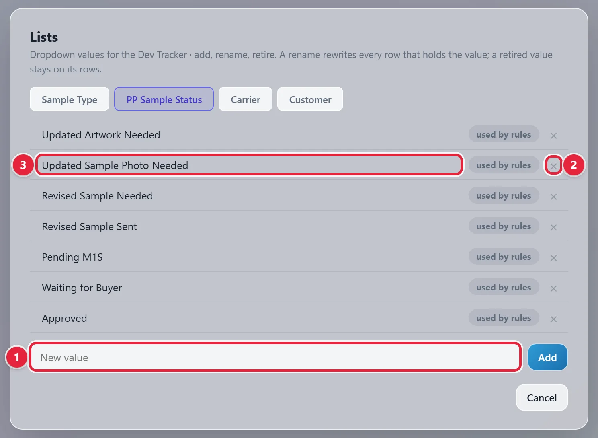
To add: type in New value 1 and click Add.
To rename: type over the name 3 and press Enter. This rewrites every row that holds it.
To retire: click × 2 at the right of the value. The value leaves the dropdowns but stays on its rows. Bring back returns it.
Retiring always asks first. Renaming asks first only for a value marked used by rules. Rules and reports follow a rename.
| Tab | What it holds |
|---|---|
| Dev Tracker | The main tab: one row per style and sample, from artwork to approval and ingredients. |
| SR | Sample Request files sent to factories. These used to be called SF. |
| SC | PPS Comments files sent to factories. This used to be the PPS tab. |
| BS | Benchmark Sample files and their follow-up. |
BF (Bottle Find: bottle and component sourcing) and FF (Fragrance Find: fragrance sourcing) have no factory. They came off the Dev Tracker on Nov 2, 2026. Their rows are in Recently deleted, and nothing new can be added or numbered there. An admin can restore a row for 90 days. Its tab then shows again, read only, to people who see all factories or have No factory turned on. The row can be exported or deleted, not changed.
| Col | Column | What it takes |
|---|---|---|
| A | Status | Open or Closed. Can't be blank. |
| B | Date Created | A date. Can't be blank. |
| C | Supplier | One of your factories. Can't be blank. |
| D | Style # | Text. Click it to open the style's panel. |
| E | Item Description | Text. |
| F | SR / BS # | Only SR or BS file numbers of your factories. |
| G | PPS Comments # | Only SC file numbers of your factories. |
| H | PO# | As typed. Links to its order. |
| I | Quote# | As typed. A quote sheet's name links to the Quote Directory. |
| J | Sample Type | From its list. Can't be cleared once set. |
| K | Customer | From its list. |
| L | Customer Ship Date | A date. |
| M | Needs To Be Approved By Date | A date. Follows the ship date, minus 90 days. |
| N | Date Artwork Sent to Factory | A date. |
| O | Estimated SRD | A date. Grey and slanted means only an estimate. |
| P | Carrier | From its list. |
| Q | Tracking # | Text. Links to the carrier's page. |
| R | Date PPS Received | A date. |
| S | Date PPS Comments Sent | A date. |
| T | PP Sample Status | From its list, or blank. |
| U | Ingredients Added To SharePoint | Yes, N/A or blank. |
| V | Artwork With Ingredients Sent To Factory | Yes, N/A or blank. |
The first columns stay frozen as you scroll: Status, Date Created and Supplier, plus Style # and Item Description when the window is wide enough. There is no Delayed SRD column and no Batch# Confirmed column.
| In Open sample | In the grid |
|---|---|
| Style | Style # |
| Factory | Supplier |
| Sample type | Sample Type |
| PPS status | PP Sample Status |
| Requested / sent | Date Artwork Sent to Factory |
| Received | Date PPS Received |
| Comments sent | Date PPS Comments Sent |
| Needs approval by | Needs To Be Approved By Date |
| PPS comments, Changes | Only in Open sample |
| Note | Open sample, and its Kanban card |
| Column | Values |
|---|---|
| Status | Open, Closed |
| Sample Type | Artwork Sample, Benchmark Sample, Factory Sample, Fragrance Scent |
| PP Sample Status | Updated Artwork Needed, Updated Sample Photo Needed, Revised Sample Needed, Revised Sample Sent, Pending M1S, Waiting for Buyer, Approved |
| Carrier | DHL, FedEx, UPS |
| Customer (main tab) | The list in ⚙ Lists. On the SR, SC and BS tabs, Customer is free text. |
| Ingredients Added To SharePoint, Artwork With Ingredients Sent To Factory | Yes, N/A |
| Received (SR and BS tabs) | Yes |
Sample Type, PP Sample Status, Carrier and the main tab's Customer take only their list's values. Supplier takes only your factories. Anything else typed or pasted is refused. Need a new customer, carrier or status? Ask Saul or another admin. They add it in ⚙ Lists.
This is where each status puts an Open row in the reports. Saul to confirm when to pick each one: see the yellow Draft note at the top.
| PP Sample Status | Report | Section |
|---|---|---|
| Updated Artwork Needed | Missing Artwork Report | Updated Artwork Needed. Artwork Samples only. |
| Updated Sample Photo Needed | PPS Pending | Waiting For Updated Sample Photo. |
| Revised Sample Needed | PPS Pending | Waiting For Factory To Send Updated Samples. |
| Revised Sample Sent | PPS Pending | Sample Approval Pending - Waiting to Receive Updated Sample. |
| Pending M1S | Missing PPS Comments | Pending M1S. Counted as awaiting approval in the top line. |
| Waiting for Buyer | Missing PPS Comments | Waiting For Buyer. Counted as awaiting approval in the top line. |
| Approved | PPS Pending | Reach Out To Factory For Ingredients, if it has a Date PPS Received and Ingredients Added To SharePoint is blank. The row stays Open. |
Some report sections list only certain types. A row of another type never shows there. Saul to confirm when to pick each type: see the yellow Draft note at the top.
| Sample Type | Sections for this type |
|---|---|
| Artwork Sample | Missing Artwork Report: all three sections. Missing SRD and Carrier Report: the two Artwork Sample sections. Missing PPS Comments: Need To Send PPS Comments. |
| Benchmark Sample | Missing SRD and Carrier Report: the two Benchmark Sample sections. Missing PPS Comments: Need To Send PPS Comments. |
| Factory Sample | Factory Sample SRD and Carrier: both sections. |
| Fragrance Scent | None. |
Every type can show in the other sections: Waiting For Buyer and Pending M1S on Missing PPS Comments, all of PPS Pending, and Open Samples in Transit. The full rules are in What each report lists.
On + New Sample, only an Artwork Sample gets Use it. Admins also get Ingredients needed? on it.
| Tab | Columns |
|---|---|
| SR | Date, Factory, File Name, Products, Customer, Carrier, Tracking #, Received |
| SC | Date, Factory, File Name, Products, Customer |
| BS | Date, Factory, File Name, Products, Customer, Tags, Carrier, Tracking #, Received |
These tabs sort by Date, oldest first. New rows go at the bottom. A new row saves once it has a Factory.
A new SR, SC or BS row gets the next number for its month, like O26SR19: October 2026, SR, number 19.
| Part | Values |
|---|---|
| Month | JA, F, MAR, AP, MAY, JUN, JUL, AU, S, O, N, D. It comes from the row's Date. |
| Year | Two digits. |
| Code | SR, SC or BS. |
| Number | Restarts at 01 each month for each code. |
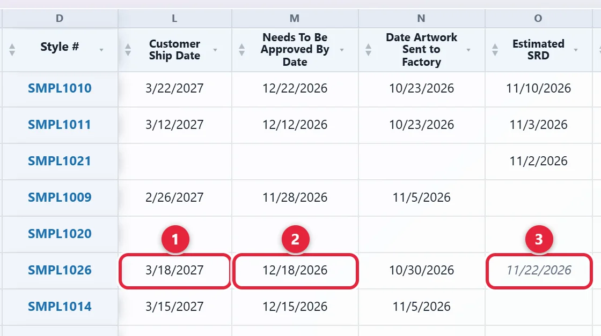
Needs To Be Approved By Date 2 is the Customer Ship Date 1 minus 90 days. It follows the ship date unless someone typed a date. A typed date stays when the ship date changes.
Estimated SRD 3 works this way:
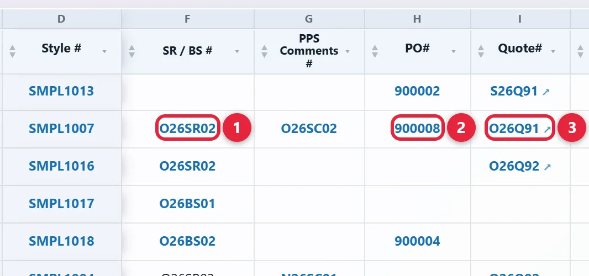
| Column | A click does this |
|---|---|
| Style # | Opens the style's panel, and the grid shows only its rows. |
| PPS Comments #, SR / BS # 1 | Opens that file's row on its tab. A number whose file isn't one of your factories' is plain text. |
| File Name | used by N rows lists your main rows that use it. |
| PO# 2 | Opens its order in the Order Tracker, for people who can view it. A dimmer link means it matched on the first six digits. If several orders match, it opens the row, which lists them. |
| Quote# 3 | Opens that sheet in the Quote Directory, in a new tab, when it looks like a quote sheet's name. |
| Tracking # | Opens the carrier's page when the Carrier is DHL, FedEx or UPS. |
Your browser's Back button returns you to the tab, filters and row you were on.
Type m/d/yyyy, m/d/yy, m/d (this year) or yyyy-mm-dd. Press F2 or double-click the cell for the date picker. A pasted date needs its year. A date that can't be read is refused, and nothing is saved.
| Key | What it does |
|---|---|
| Arrow keys | Move the selected cell. With Shift, select more cells. |
| Typing | Replaces what's in the cell. |
| F2, double-click | Edit what's in the cell. |
| Enter, Tab | Save the cell, then move down or right. |
| Esc | Cancel what hasn't saved. Clear a new row that isn't saved. |
| Ctrl+C, Ctrl+V | Copy and paste. |
| Ctrl+D | Fill from the cell or row above. On a new line, click a cell in the line, then the empty box under # to copy the whole row. With one cell selected it copies only that cell, and the row saves at once if that cell is the Supplier. |
| Delete | Clear the selected cells. |
| Ctrl+Z | Undo your last change. |
| Ctrl+F | Find on the sheet. |
| Right-click, Shift+F10 | The row menu, with Insert row below. |
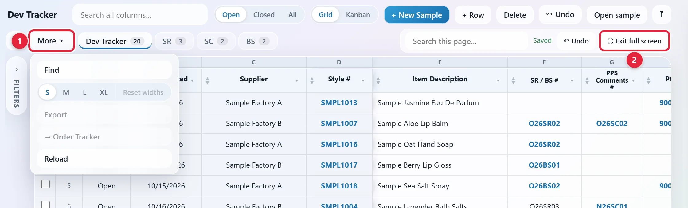
Every report lists Open main-tab rows of your factories only. The Master Report is the first four below, as four tabs. On its tabs, the second one is called SRD Report.
| Report | Section | Rows it lists |
|---|---|---|
| Missing Artwork Report | Send Artwork To Factory | Artwork Samples with no Date Artwork Sent to Factory. |
| Send Ingredient Artwork To Factory | Artwork Samples with Ingredients Added To SharePoint at Yes and Artwork With Ingredients Sent To Factory blank. | |
| Updated Artwork Needed | Artwork Samples at that status. | |
| Missing SRD and Carrier Report | Follow Up With Factory For SRD - Artwork Sample | No Estimated SRD, or only the estimate. Artwork was sent 2 or more days ago. |
| Follow Up With Factory For SRD - Benchmark Sample | No Estimated SRD, or only the estimate. Created 10 or more days ago. | |
| Follow Up for Missing Tracking Info - Artwork Sample, and - Benchmark Sample | Estimated SRD has passed, from the day after it. Carrier or Tracking # is blank. | |
| Missing PPS Comments | Need To Send PPS Comments | Artwork or Benchmark Samples with a Date PPS Received and no Date PPS Comments Sent, not at Pending M1S or Waiting for Buyer. PPS Comments Due Date is 3 days after Date PPS Received. |
| Waiting For Buyer | Rows at that status. | |
| Pending M1S | Rows at that status. | |
| PPS Pending | Approaching Approval Date | Not Approved. Needs To Be Approved By Date is 10 days away or less, or past. |
| Reach Out To Factory For Ingredients | Approved, with a Date PPS Received and Ingredients Added To SharePoint blank. | |
| Waiting For Updated Sample Photo | Updated Sample Photo Needed. | |
| Waiting For Factory To Send Updated Samples | Revised Sample Needed. | |
| Sample Approval Pending - Waiting to Receive Updated Sample | Revised Sample Sent. | |
| Open Samples in Transit | Open Samples in Transit | A Tracking # and no Date PPS Received. |
| Factory Sample SRD and Carrier | Follow Up With Factory For SRD - Factory Sample | Factory Samples with no Estimated SRD, or only the estimate. |
| Follow Up With Factory For Carrier Info - Factory Sample | Factory Samples with an Estimated SRD 2 or more days ago and no Carrier. |
Artwork is in Preview: only admins see it. See Artwork. PPS and Compliance screens aren't in Dev PLM yet.